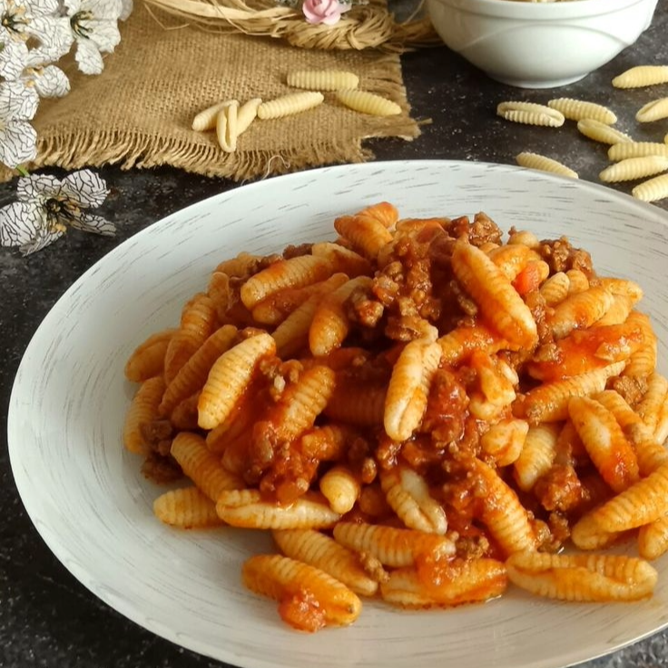

Ricette Salate
In questa sezione troverai tutte le ricette salate tipiche delle regioni italiane, dai piatti di pasta alle pizze, ideali per pranzi e cene gustose.
Sicilia -Gli Arancini-
Ingredienti (per 12 arancini):
-Riso vialone nano 500 g
-Acqua 1,2 l
-Caciocavallo stagionato (da grattugiare) 100g
-Burro 30 g
-Zafferano 0,15
-Sale grosso 1 cucchiaio
Per il ripieno al ragù:
-Macinato di maiale 150 g
-Passata di pomodoro 200 g
-Pisellini 80 g
-Cipolle bianche 50 g
-Vino rosso 50 g
-Olio extravergine d'oliva q.b.
-Sale fino q.b.
-Pepe nero q.b.
-Caciocavallo fresco 50 g
Per il ripieno al prosciutto:
-Prosciutto cotto in una sola fetta 120 g
-Mozzarella 120 g
Per la pastella
-Farina 00 200 g
-Acqua 350 g
-Sale fino 1 pizzico
Per impanare e friggere:
-Pangrattato 200 g
-Olio di semi 3 l
Preparazione:
Per preparare gli arancini di riso per prima cosa lessate il riso in 1,2 l di acqua bollente con il sale grosso; in questo modo, a cottura avvenuta, l'acqua verrà completamente assorbita e l'amido rimarrà tutto in pentola ottenendo così un riso molto asciutto e compatto). Mescolate di tanto in tanto. Cuocete per circa 15 minuti; a pochi minuti dalla fine del tempo di cottura aggiungete lo zafferano e mescolate bene.
Una volta che il liquido sarà stato tutto assorbito, spegnete il fuoco e unite anche il burro a pezzetti e il formaggio grattugiato, poi mescolate bene per amalgamare il tutto. Versate e livellate il riso su un vassoio ampio e basso, poi coprite con la pellicola, o carta forno, e lasciate raffreddare completamente per un paio di ore a temperatura ambiente; la pellicola eviterà che la superficie del riso si secchi.
Intanto dedicatevi al ripieno al ragù: mondate e affettate finemente la cipolla. Fate stufare la cipolla tritata in un tegame con l'olio, poi unite la carne macinata, salate e pepate. Rosolate a fuoco vivace, quindi sfumate con il vino.
A questo punto versate la passata di pomodoro, aggiustate di sale e di pepe e cuocete a fuoco lento con il coperchio per almeno 20 minuti. A metà cottura, unite i piselli. Se necessario potete aggiungere pochissima acqua calda, ma tenete conto che il ragù dovrà risultare ben rappreso e non liquido.
Mentre i piselli cuociono, tagliate a cubetti la mozzarella, il prosciutto cotto e il caciocavallo fresco. Avrete così pronti tutti i ripieni. Una volta che il riso si sarà raffreddato completamente potete formare gli arancini; per aiutarvi a modellarli tenete vicino una ciotola colma di acqua così da potervi inumidire le mani.
Prelevate un paio di cucchiai di riso per volta (circa 120 g), poi schiacciate il mucchietto sul palmo della mano per formare una conca. Farcite ciascun arancino con dadini di mozzarella e prosciutto. Il ripieno con questo tipo di ripieno viene tradizionalmente detto "al burro".
Quindi ricoprite il ripieno con il riso e modellatelo dandogli una forma tonda. Procedete in questo modo per farcire circa metà degli arancini, poi farcite l'altra metà con un cucchiaino di ripieno al ragù.
Aggiungete qualche cubetto di caciocavallo e modellate il riso dandogli una forma a punta. Ora che tutti gli arancini sono pronti, preparate la pastella: in una ciotola versate la farina setacciata, un pizzico di sale e l'acqua a filo.
Mescolate accuratamente con una frusta per evitare che si formino grumi. Tuffate gli arancini, uno ad uno, nella pastella avendo cura di ricoprirli interamente.
Infine rotolateli nel pangrattato. In una pentola scaldate l'olio fino alla temperatura di 160°-170°, poi friggete 1-2 arancini alla volta, per non abbassare la temperatura dell'olio.
Quando saranno ben dorati potrete scolarli e trasferirli su un vassoio foderato con carta assorbente. Gustate gli arancini di riso ben caldi !

Sardegna -I Malloreddus alla Campidanese-
Ingredienti:
-Semola di grano duro rimacinata 400 g
-Acqua 300 g
-Sale fino q.b.
Per il sugo:
-Salsiccia 300 g
-Passata di pomodoro 300 g
-Cipolle dorate 1
-Zafferano (1 bustina) 0,15 g
-Olio extravergine d'oliva q.b.
-Sale 1 pizzico
Per completare:
-Pecorino sardo media stagionatura (da grattugiare) 200 g
Preparazione:
Per preparare i malloreddus alla campidanese iniziate dal sugo: mondate e tritate la cipolla. In una padella antiaderente fate soffriggere la cipolla con un giro d'olio. Intanto incidete la salsiccia per eliminate il budello.
Una volta che la cipolla sarà imbiondita, aggiungete la salsiccia sbriciolata a mano. Rosolatela per qualche minuto, poi versate la passata di pomodoro e salate.
Insaporite con lo zafferano in polvere, mescolate bene, coprite con un coperchio e cuocete a fiamma medio-bassa per circa 20 minuti. Nel frattempo preparate i malloreddus: in una ciotola, unite la semola rimacinata e circa due terzi dell'acqua. Il resto dell'acqua andrà utilizzato solo se necessario.
Aggiungete anche un pizzico di sale. Mescolate prima con una forchetta, poi trasferite l'impasto sulla spianatoia e impastate a mano fino ad ottenere un panetto liscio. Lasciate riposare l'impasto per 15-20 minuti, coperto con una ciotola.
Trascorso il tempo di riposo, dividete il panetto in piccoli pezzi e formate delle striscioline di pasta di circa 5 mm di diametro. È importante non aggiungere altra farina per formare gli gnocchetti, altrimenti la pasta diventerebbe difficile da lavorare. Con un tarocco tagliate le striscioline a pezzetti di circa 8 mm, poi passateli sul rigagnocchi, tenendo la parte tagliata verso l’alto. Proseguite in questo modo fino ad esaurire l'impasto.
Disponete i malloreddus su un canovaccio leggermente infarinato o sulla spianatoia infarinata. Intanto il sugo sarà pronto, quindi cuocete gli gnocchi in acqua bollente salata.
Scolate i malloreddus non appena vengono a galla, trasferiteli nel sugo, aggiungete un mestolo d’acqua di cottura e mescolate per amalgamare, poi spegnete il fuoco.
A fiamma spenta completate con un filo d'olio e abbondante pecorino grattugiato. I malloreddus alla campidanese sono pronti per essere impiattati, serviteli caldi!